Narrative
Week 8 was incredibly packed, blending both hardware maintenance and major software milestones. It started on April 6 with a hardware request to replace the toner for a BROTHER DCP L2540DW printer. After physically removing and replacing the cartridge, I ran into an issue where the machine still displayed a "toner low" error. Since my mentor was on leave and my co-OJT was absent, I had to troubleshoot independently. I messaged my mentor for advice, and he reminded me to perform a manual reset on the printer's software. Following his instructions, the reset was successful, and the printer resumed normal operation.
The rest of that day was dedicated back to the QR Inventory System. I added a much-needed search bar functionality to the departments module, heavily enhanced the reports UI, and implemented a comprehensive reports tracking table. To make navigation easier for users, I fixed icon inconsistencies, applied color-coding logic to the department codes for quicker visual identification, and polished the authentication modal UI further.
On April 7 and 8, my primary objective was aligning the generated system documents with the company's official templates. I spent significant time coding the layout for downloaded PDF reports so that they exactly matched the layout of the company-provided masterlist. This included embedding the official company logo directly into the PDF headers and ensuring the table structure rendered perfectly before finalizing the entire development phase of the system.
Later on April 8, preparing for the big launch, I reinstalled a virtual machine (VM) specifically to practice deployment using Windows Server Internet Information Services (IIS). My goal was to perfect the deployment steps in an isolated staging environment so that I would not encounter structural errors when touching the company's real server. This early practice immediately paid off, as I encountered an issue where installing the URL Rewrite module caused the local site to go down.
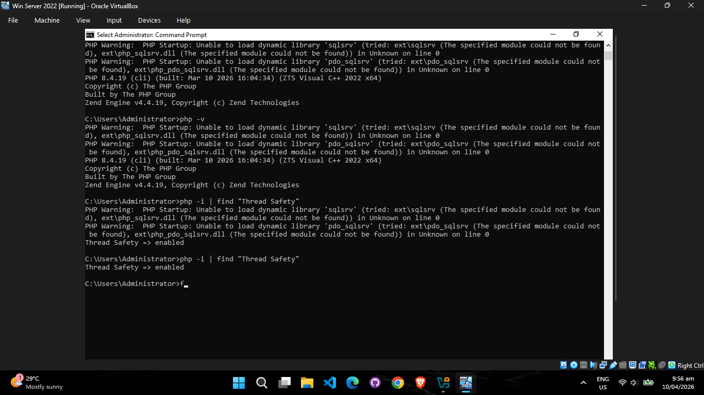
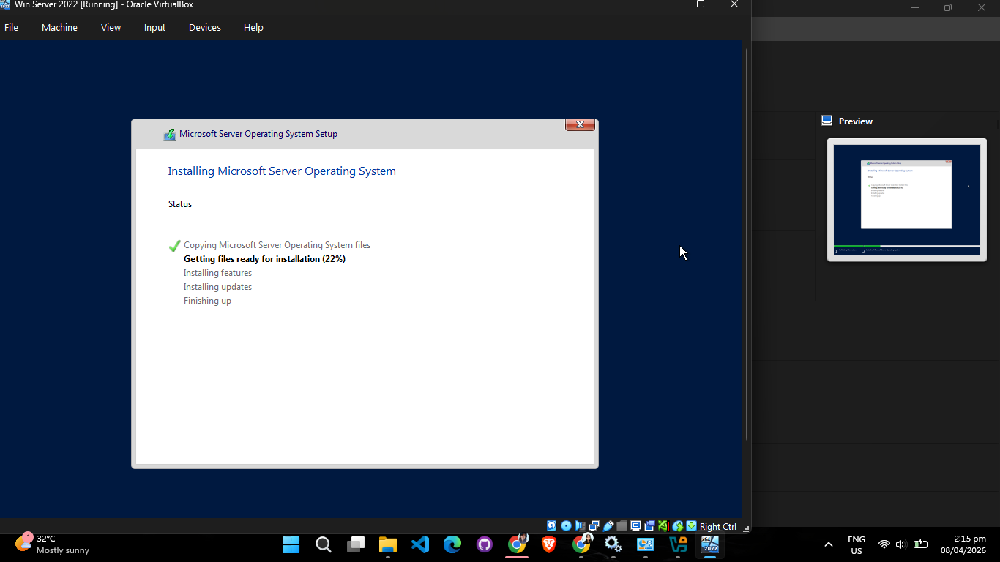
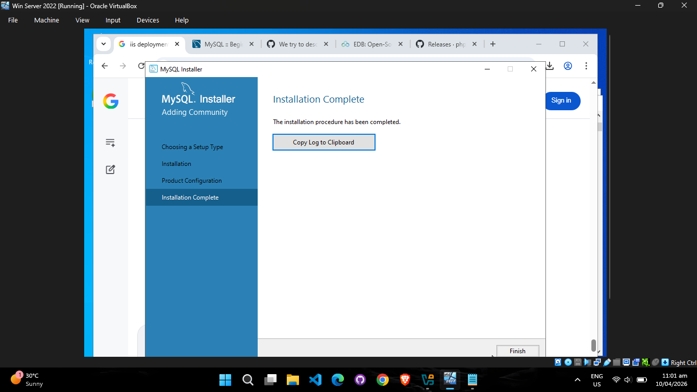
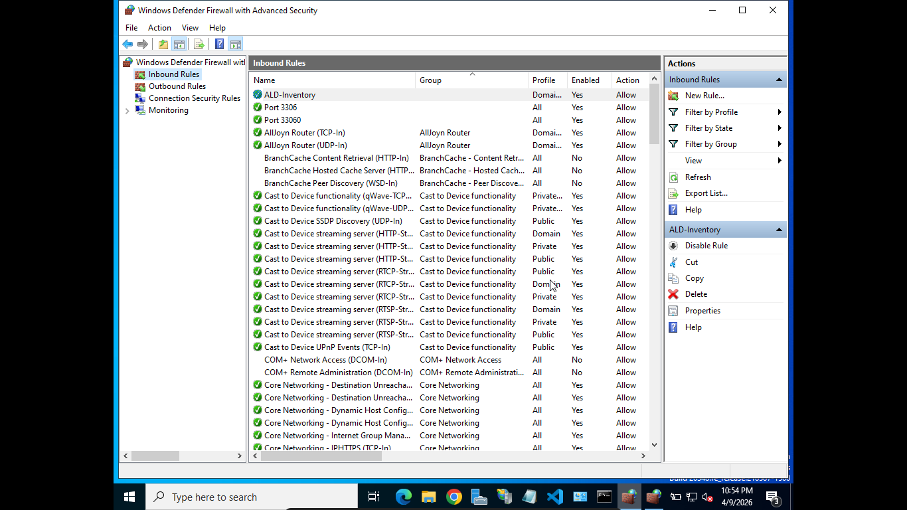
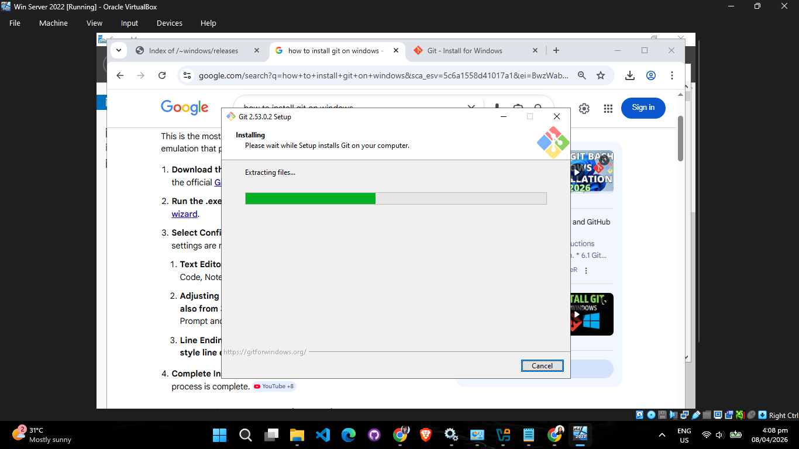
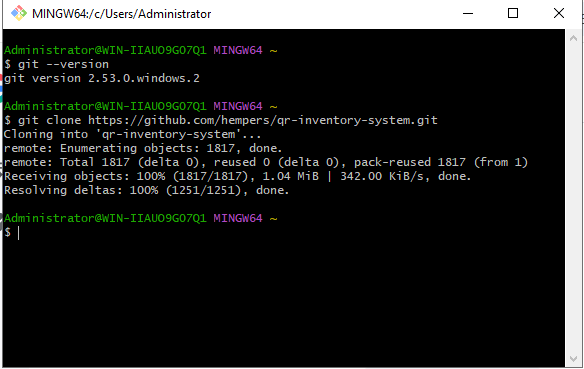
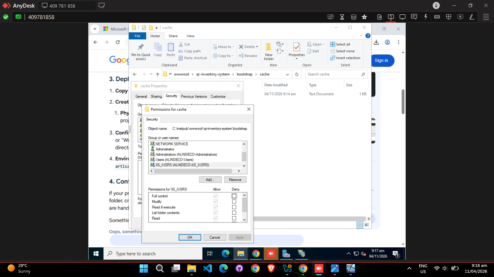
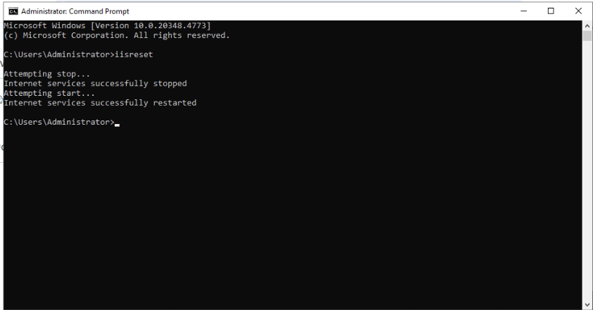
By April 10, I continued wrestling with the URL rewrite module. The main culprit turned out to be the `php.ini` configuration file, which had become scrambled due to conflicting previous installations of PHP sets alongside Node.js. After untangling the configuration paths, I finally had a stable staging environment.
Finally, on April 11, the time came for the live launch. Using the exact steps I practiced in the VM, I successfully deployed the QR Inventory project directly onto the company's primary server. The launch was flawless, and the new web-based project became officially visible and accessible to other devices sitting securely within the company network!

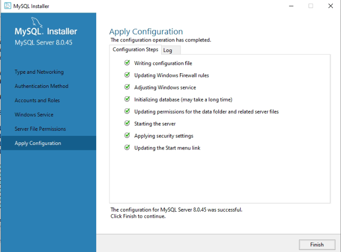
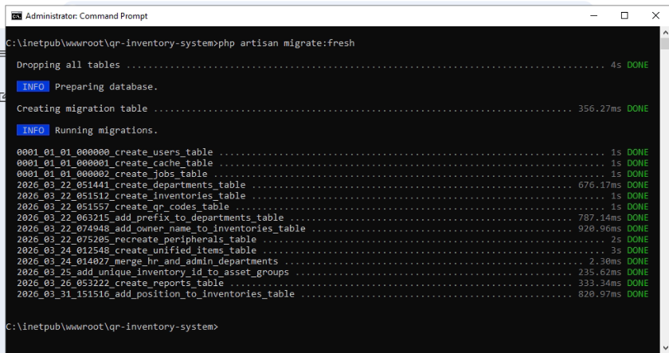
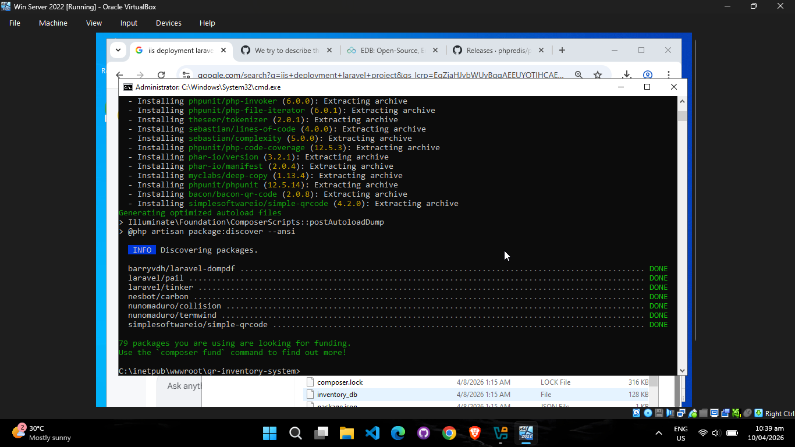
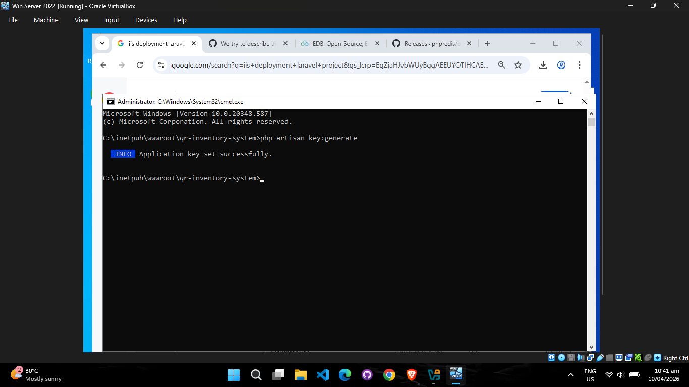